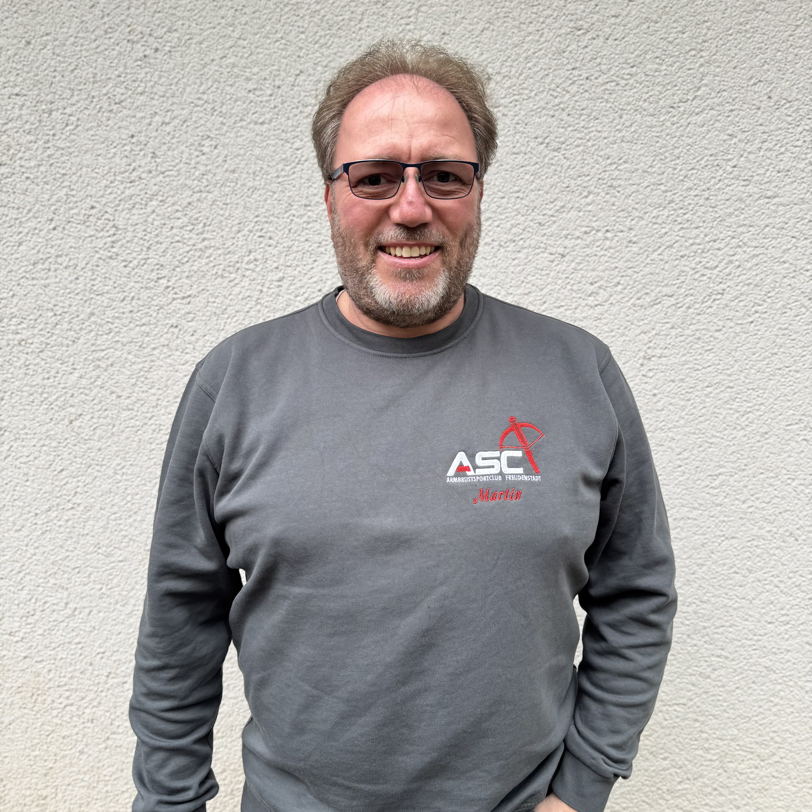
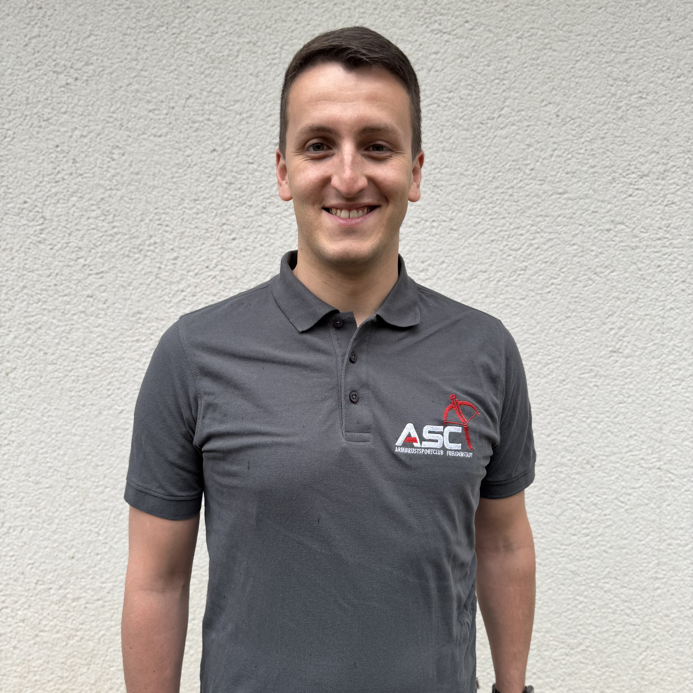
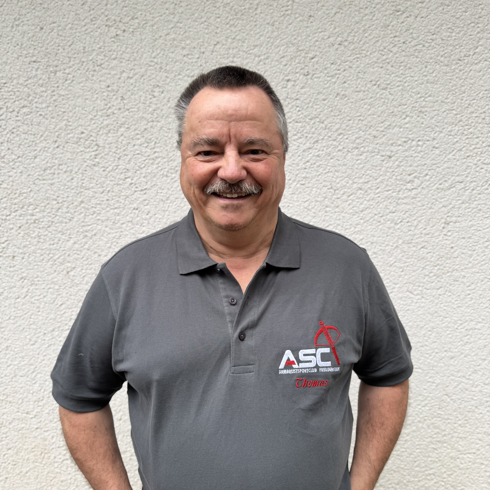

Schützenkreis Freudenstadt
Der ASC Freudenstadt ist Teil des regionalen Schützenkreises Freudenstadt.
Über uns
Gegründet aus Leistungsschützen, gewachsen durch Engagement und getragen von Gemeinschaft.
Der ASC Freudenstadt e.V. wurde im Jahr 2011 aus Leistungsschützen gegründet. Seitdem steht der Verein für ambitionierten Schießsport, konsequente sportliche Entwicklung und eine starke Gemeinschaft innerhalb des Vereinslebens.
Der Schwerpunkt liegt insbesondere auf Armbrustdisziplinen, ergänzt durch alle gängigen Gewehr- und Pistolendisziplinen. Damit verbindet der Verein Spezialisierung mit sportlicher Breite.
Verbände
Der ASC Freudenstadt ist Teil des regionalen Schützenkreises Freudenstadt.
Über den Kreis gehört der Verein zum Württembergischen Schützenverband.
Darüber hinaus ist der Verein über seine Verbandsstruktur Teil des Deutschen Schützenbundes und des Württembergischen Landessportbundes.
In den Reihen des ASC Freudenstadt stehen mehrfach ausgezeichnete Sportlerinnen und Sportler, darunter mehrfache Welt- und Europameister. Diese Erfolge spiegeln den hohen sportlichen Anspruch des Vereins wider.
Gleichzeitig bleibt der Verein offen, kollegial und gemeinschaftlich. Leistung und Zusammenhalt schließen sich beim ASC nicht aus, sondern ergänzen sich.
Unsere Schießanlagen umfassen einen 10m-Stand für Luftdruckwaffen und 10m-Match-Armbrust. Außerdem steht eine Anlage für die Disziplin Feldarmbrust über die Distanzen 35m, 50m und 65m zur Verfügung.
Mitgliedschaft
Der ASC Freudenstadt bietet faire Jahresbeiträge für Erwachsene und Minderjährige.
50,00 € p.a.
Jahresbeitrag für aktive und fördernde erwachsene Mitglieder.
25,00 € p.a.
Ermäßigter Jahresbeitrag für Kinder, Jugendliche und junge Vereinsmitglieder.
Wer Interesse am Schießsport oder an unseren Armbrustdisziplinen hat, ist beim ASC Freudenstadt herzlich willkommen. Neue Mitglieder lernen den Verein, das Training und die Anlagen in ruhiger Atmosphäre kennen.
Zum MitgliedsantragVorstand & Ausschuss
 Bild folgt
Bild folgt
Vorstandsvorsitzender Vorstand Sport
 Bild folgt
Bild folgt
Vorstand Finanzen
 Bild folgt
Bild folgt
Vorstand Mitglieder

Bild folgtVorstand Kommunikation
 Bild folgt
Bild folgt
Vorstand Bau & Veranstaltungen

Bild folgtJugendleiter

Bild folgtBeisitzer